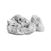

Уважаемые коллеги, мы рады приветствовать вас на сайте проекта
посвященного дифференциальной диагностике и терапии головокружений любой этиологии.
Обучающий курс включает в себя различные форматы материалов с участием лидеров мнений – неврологов и отоларингологов:
Подкасты
Короткие видеоролики по проблематике от специалистов в формате «вопрос-ответ»
Вебинары
Вебинары с участием ведущих лидеров мнений
Квизы
Интерактивные квизы для проверки и закрепления знаний по изученным темам
Статья
Краткие обзоры исследований и новостей
Клинические случаи
Интерактивные задачи с контрольными вопросами и обоснования, которые помогают лучше разобраться в теме и выбрать тактику лечения
Головокружение (вертиго) —
— один из наиболее частых симптомов, с которыми пациенты обращаются к врачу, возникающий почти у трети людей в возрасте старше 60 лет [1]. Оно проявляется ощущением вращения, нарушениями равновесия, походки и ориентации в пространстве.
Головокружением страдают [1-3]:
жизни
Головокружение снижает качество жизни [1, 3, 4]:
- У большинства пациентов с головокружением заболевание существенно влияет на повседневную жизнь.
- У людей с вестибулярным и невестибулярным головокружением значительно снижено качество жизни, связанное со здоровьем.
- Головокружение у пожилых считают предрасполагающим фактором падения — основной причины внезапной смерти в возрасте старше 65 лет.
Вертиго само по себе не является нозологической единицей, а включает симптомы различной этиологии и патогенеза. Дифференциальная диагностика направлена на оценку типа головокружения, длительности приступов, пусковых факторов и сопутствующих заболеваний, и включает вестибулярное и неврологическое обследование [5].
Зачастую, не представляется возможным сразу установить причину головокружения. Вертигохель®, являясь многокомпонентным лекарственным средством, позволяет воздействовать на головокружения различного происхождения, облегчая врачу терапевтическую задачу.
Распределение диагноза «вертиго» у пациентов, посетивших врачей общей практики в связи с
головокружением [8]
Нарушенный кровоток в мелких кровеносных сосудах способствует развитию головокружения и осложняет течение таких заболеваний как: артериальная гипертония, ишемическая болезнь сердца, сахарный диабет и др. Регуляция микроциркуляции основана на процессах вазодилатации и вазоконстрикции.
Исследование механизма действия препарата Вертигохель® позволяет сделать вывод о многоцелевой эффективности: расширение мелких кровеносных сосудов приводит к улучшению микроциркуляции. Вертигохель® сопоставим по терапевтической эффективности со стандартными лекарственными препаратами для уменьшения частоты, продолжительности и интенсивности приступов головокружения [9-14].
АКТИВНЫЕ ИНГРЕДИЕНТЫ:
-
Petroleum rectificatum(минеральное масло)
- 
Ambra grisea(амбра)
- 
Anamirta cocculus(индийская ягода)
-
Conium macalatum(болиголов пятнистый)
Список источников:
- Fernandez, L., Breinbauer, H.A., Delano P.H. (2015). Vertigo and dizziness in the elderly. *Frontiers in Neurology*, 6:1–6.
- Sloane, P.D., et al. (2001). Dizziness: state of the science. *Annals of Internal Medicine*, 134(9):823–32.
- Neuhauser, H.K., et al. (2008). Burden of dizziness and vertigo in the community. *Archives of Internal Medicine*, 168(19):2118–2124.
- Neuhauser, H.K. (2009). Epidemiologie von Schwindelerkrankungen. *Nervenarzt*, 80(8):887–894.
- Lempert, T. (2005). Schwindelattacken: Differenzialdiagnose und Therapie. *Fortschritte der Neurologie Psychiatrie*, 73(10):605–620.
- Abholz, H.-H. (2007). Schwindel – Diagnostik und Therapie. *ZFA - Zeitschrift für Allgemeinmedizin*, 83(9):373–386.
- Antonini-Revaz, S., Guyot, J., Stalder, H. (2004). Schwindel. *Primary Care*, 4(45):899–904.
- Kruschinski, C., et al. (2008). Frequency of dizziness-related diagnoses and prescriptions in a general practice database. [In German]. *Zeitschrift für Evidenz, Fortbildung und Qualität im Gesundheitswesen*, 102(5):313–9.
- Klopp, R., Niemer, W., Weiser, M. (2005). Microcirculatory effects of a homeopathic preparation in patients with mild vertigo: an intravital microscopic study. *Microvascular Research*, 69(1-2):10–16.
- Weiser, M., Strösser, W., Klein, P. (1998). Homeopathic vs conventional treatment of vertigo: a randomized double-blind controlled clinical study. *Archives of Otolaryngology Head Neck Surgery*, 124(8):879–885.
- Weiser, M., Strösser, W. (2000). Vergleichsstudie Homöopathikum vs. Betahistin: Behandlung des Schwindels. *Allgemeinarzt*, 22(13):962–964.
- Issing, W., Klein, P., Weiser, M. (2005). The homeopathic preparation Vertigoheel® versus Ginkgo biloba in the treatment of vertigo in an elderly population: a double-blinded, randomized, controlled clinical trial. *Journal of Alternative and Complementary Medicine*, 11(1):155–160.
- Wolschner, U., et al. (2001). Behandlung des Schwindels mit einem modernen Homöopathikum: Ergebnisse einer referenzkontrollierten Kohortenstudie. *Biologische Medizin*, 30(4):184–190.
- Schneider, B., Klein, P., Weiser, M. (2005). Treatment of vertigo with a homeopathic complex remedy compared with usual treatments: a meta-analysis of clinical trials. *Arzneimittelforschung*, 55(1):23–29.